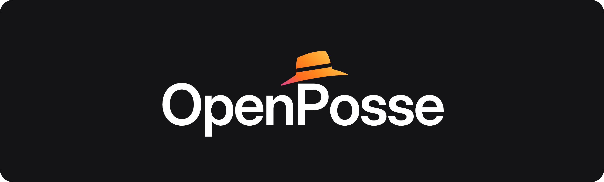

Set up OpenPosse
Steps 1–3 are needed once. The rest are optional, and you can change them any time. Everything runs on this machine – speech recognition included.
Let it hear you
The microphone is granted to OpenPosse itself, not to any website, so it's asked once, here, and never again.
Download the speech model
A few tens of megabytes, once. After this, nothing you say is sent anywhere – recognition runs entirely on this machine, and OpenPosse requires it to.
Choose how you summon it
Chrome only lets an extension suggest ⌘⇧ and a digit (Ctrl+Shift on Windows), so OpenPosse comes with one of those. For anything else – ⌥V, say – the keyboard button opens Chrome's shortcuts page. Tick Global there so it works from any app, not just Chrome.
Show the orb on any page – optional
The orb appears over whatever page you're on. Chrome normally lets an extension use the current tab when you press its shortcut, but not when the shortcut is Global – the setting that makes it work from other apps. So to have both, Chrome has to ask you.
Chrome will word this as “Read and change all your data on all websites”, because that is the only wording it has. What OpenPosse does with it is draw the orb. It still sends nothing anywhere – speech, AI assistants and answers all stay on this machine – and it does not read pages it hasn't been asked to drive.
The side panel doesn't need this – it opens on any page. Skip it and the orb still appears on your AI assistants' own pages, and the toolbar icon shows what's happening everywhere else. You can turn it off here at any time.
Voices
Answers are spoken back to you, and a long answer is shortened to one sentence first – the full text stays on screen. Everything here runs on this machine.
Better voices – optional, …
The system voices are your operating system's, and they sound like it. Kokoro is a neural voice model that runs on this machine – nothing you say or hear goes anywhere. It is a one-off download, kept locally afterwards.
It needs Chrome's WebGPU, which uses your graphics chip, to be fast enough to talk with. Without it, OpenPosse keeps using the system voices.
Try each voice
Each voice, saying whatever is in the box up in Voices – the same words every time, so they can be compared rather than just sampled. The first one takes a moment while the model loads; the rest are immediate.
AI for the rest of us.
Talk to the AI assistants you already use, like Notion AI, by name and out loud, and hear the answer. Nothing to configure, no terminal, no jargon.
Your voice never leaves this computer: speech is recognised and spoken here, and a question goes only to the AI assistant you asked.
For more details, visit the website: openposse.org
posse/ˈpɒsi/ · noun
A group of people gathered for a shared purpose. From the Latin posse comitatus, “the power of the county”: the people a sheriff could summon for help, like the riders of a Western.
Here, the posse is your AI assistants. You give each one a name, and saying the name summons it. The hat on the logo is a nod to the sheriff.
- Private by design
- Always on-device
- Stay in the flow
Add a shared AI assistant
Someone else can record an AI assistant and send you the file. You will be asked for access to that one site before anything is added.
AI assistants
In the panel, a short list of AI assistants gets bigger avatars: up to 4 fill a row, up to 10 sit five to a row, up to 20 six. Off, every avatar is the same size however many there are.
Shows each AI assistant's site icon instead of its letter, using the icon Chrome already has, so nothing is downloaded. An AI assistant keeps its letter until its site has been open in a tab. Chrome words the request as “Read the icons of the websites you visit”.